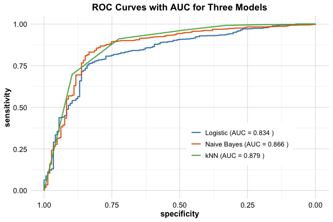

| Outcome type | Distribution | Link function | Model |
|---|---|---|---|
| Continuous outcome | Normal | Identity | Linear regression |
| Binary outcome | Binomial | Logit | Logistic regression |
| Count outcome | Poisson | Log | Poisson regression |
11 Generalized Linear Models: Logistic and Poisson Regression
The theory of probabilities is at bottom nothing but common sense reduced to calculation.
In Chapter 10, we developed regression models for continuous outcomes such as house prices, healthcare costs, and hourly bike rental demand. Those models provided a useful framework for relating a response variable to a set of predictors, interpreting coefficient estimates, and generating predictions. In many data science applications, however, the response variable is not continuous. We may wish to model whether a customer churns, whether a patient has a disease, or how many service calls a customer makes within a given period. Such outcomes are binary or count-based, and they require a broader regression framework.
When the response variable is binary or a count, the assumptions of ordinary linear regression are no longer appropriate. A linear model can produce fitted values below 0 or above 1 when used for probabilities, and it does not naturally reflect the discrete, non-negative structure of count data. More generally, the variability of binary and count outcomes is linked to their mean in ways that differ from the constant-variance setting of linear regression. If we ignore these features and apply linear regression mechanically, the resulting model may be difficult to interpret and may lead to misleading conclusions.
Generalized linear models extend the regression framework to address these limitations. They preserve the central idea of relating an outcome to a set of predictors through a structured model, while allowing the distribution of the response and the link between the mean response and the predictors to adapt to the type of outcome under study. This makes it possible to model probabilities for binary outcomes and expected counts for event data while retaining the interpretability that makes regression so valuable.
This chapter also connects naturally to earlier parts of the book. In Chapter 7, we introduced classification through k-Nearest Neighbors, and in Chapter 9, we examined the Naive Bayes classifier as a probabilistic approach to prediction. Logistic regression offers another perspective on binary classification, one that is grounded in the regression framework and supports direct interpretation of predictor effects. Poisson regression extends regression in a different direction by addressing outcomes that record how often an event occurs. Together, these models show how a common regression philosophy can be adapted to different kinds of response variables.
As in earlier chapters, we work within the Data Science Workflow introduced in Chapter 2. We begin with the general structure of generalized linear models, then examine logistic regression for binary outcomes and Poisson regression for count data, and finally apply these ideas in a case study on customer churn prediction. In this way, the chapter shows not only how these models are formulated, but also how they can support interpretation, prediction, and decision-making in practical data science settings.
What This Chapter Covers
This chapter is organized around three main ideas. First, we introduce the generalized linear model framework and explain how it extends ordinary linear regression by combining a response distribution, a linear predictor, and a link function. This provides the conceptual foundation for the rest of the chapter.
Second, we study two important generalized linear models. We begin with logistic regression for binary outcomes, where the focus is on modeling probabilities, interpreting coefficients through odds and odds ratios, and converting predicted probabilities into class predictions when needed. We then turn to Poisson regression for count outcomes, where the emphasis shifts to modeling expected event counts, interpreting multiplicative effects, and recognizing practical issues such as overdispersion.
Third, we apply logistic regression in a case study on customer churn prediction and compare it with k-Nearest Neighbors and Naive Bayes. This comparison shows how different predictive models can be evaluated within a common framework using ROC curves and the area under the curve.
By the end of the chapter, you will understand when generalized linear models are needed, how logistic and Poisson regression extend the ideas of Chapter 10, and how these models can be fitted, interpreted, and evaluated in R.
11.1 From Linear Regression to Generalized Linear Models
In Chapter 10, we used linear regression to model continuous outcomes such as house prices and bike rental demand. That framework gave us a clear way to relate a response variable to one or more predictors, estimate coefficients, interpret their effects, and generate predictions. Many important response variables in data science, however, are not continuous. In practice, the outcome may be binary, such as whether a customer churns, or it may be a count, such as the number of customer service calls. In such settings, the assumptions of ordinary linear regression no longer match the structure of the data.
To see why a broader framework is needed, consider what happens if we apply ordinary linear regression to a binary outcome such as customer churn. A linear model may produce fitted values below 0 or above 1, even though probabilities must lie between 0 and 1. This already shows that the model does not respect the natural range of the response variable. In addition, the variability of a binary response is not constant across all predictor values. Instead, it depends on the underlying probability, which conflicts with the constant-variance assumption used in ordinary linear regression.
A similar problem arises with count data. Suppose we wish to model the number of service calls made by a customer. Counts are non-negative integers, so values such as \(-2.4\) or \(3.7\) do not make sense as predictions. Yet a linear regression model treats the response as if any real-valued outcome were possible. Count data also tend to have a variance that changes with the mean rather than remaining roughly constant. Once again, the assumptions of ordinary linear regression do not align well with the data-generating process.
These examples show that the issue is not merely technical. A useful model should respect the basic nature of the outcome being studied. When the response is binary, the model should produce probabilities in the interval \([0,1]\). When the response is a count, the model should produce non-negative expected counts. To address these limitations, generalized linear models provide a broader regression framework that adapts the model to the type of outcome being studied.
Rather than treating binary and count outcomes as special cases outside regression, generalized linear models incorporate them directly by allowing both the response distribution and the relationship between the mean response and the predictors to vary according to the problem at hand. The result is a framework that is both flexible and unified: the model changes to suit the data, while the central regression idea remains the same.
The Structure of a Generalized Linear Model
A generalized linear model, often abbreviated as GLM, is defined by three connected components. Together, these components determine how the outcome is distributed, how the predictors enter the model, and how the mean of the response is linked to those predictors.
The first component is the random component. This specifies the probability distribution of the response. In ordinary linear regression, we work with a continuous outcome and typically assume normally distributed errors. In a generalized linear model, by contrast, we choose a distribution that matches the type of outcome being analyzed. For binary data, this is usually a binomial distribution. For count data, it is often a Poisson distribution.
The second component is the systematic component. This is the familiar linear predictor, \[ \eta = b_0 + b_1 x_1 + b_2 x_2 + \dots + b_m x_m, \] where \(b_0, b_1, \dots, b_m\) are coefficients and \(x_1, x_2, \dots, x_m\) are predictors. This part of the model closely resembles the regression equations introduced in Chapter 10. It preserves the central regression idea that predictors combine linearly, though not necessarily on the original scale of the response.
The third component is the link function. This function connects the expected value of the response to the linear predictor. If we let \(\mu = \mathbb{E}(Y)\) denote the expected response, then a generalized linear model has the form \[ g(\mu) = \eta, \] where \(g(\cdot)\) is the link function. Its role is to transform the mean response to a scale on which a linear relationship with the predictors is appropriate.
In ordinary linear regression, the link function is the identity link, so that \[ \mu = \eta. \] This means that the expected response is modeled directly as a linear function of the predictors. In logistic regression, the link function is the logit, which maps a probability to the log-odds scale. In Poisson regression, the link function is the logarithm, which maps a positive expected count to the real line.
Taken together, these three components show that generalized linear models do not replace regression, but extend it. Ordinary linear regression can itself be viewed as a special case of the GLM framework, with a normal response distribution and the identity link. Logistic and Poisson regression follow the same general structure, while adapting it to outcomes that are binary or count-based.
These three components come together differently depending on the type of response variable being modeled. In practice, this means selecting a probability distribution that matches the outcome and a link function that connects its mean to the linear predictor. Table Table 11.1 summarizes the main cases considered in this chapter.
For a continuous response, the normal distribution together with the identity link gives the ordinary linear regression model developed in Chapter 10. For a binary response, the binomial distribution combined with the logit link gives logistic regression. For a count response, the Poisson distribution combined with the log link gives Poisson regression. Ordinary linear regression therefore appears not as a separate method, but as one member of the broader GLM family.
This comparison highlights an important point: logistic and Poisson regression are not separate modeling ideas unrelated to linear regression. They belong to the same general framework. What changes from one model to another is the assumed distribution of the response and the link function used to relate its expected value to the linear predictor. In this way, generalized linear models provide a unified language for regression across different types of outcomes.
This general framework guides the rest of the chapter. We begin with logistic regression, which applies these ideas to binary outcomes and shows how regression can be used to model event probabilities in a principled and interpretable way.
11.2 Logistic Regression for Binary Outcomes
Many important data science questions involve a binary outcome. Will a customer churn? Will a patient respond to treatment? Will a transaction be classified as fraudulent? In each case, the response takes one of two possible values. Earlier in the book, we approached such problems from a classification perspective through methods such as k-Nearest Neighbors in Chapter 7 and the Naive Bayes classifier in Chapter 9. We now turn to a complementary model-based approach that places binary outcomes within the regression framework: logistic regression.
Logistic regression is one of the most widely used generalized linear models. Rather than modeling the binary response directly, it models the probability of an event through a transformation that keeps fitted values between 0 and 1. This avoids key problems of ordinary linear regression for binary data, including fitted values outside \([0,1]\), non-constant variability, and unrealistic linearity on the probability scale.
We begin with the probability of the event of interest. Let \(p\) denote the probability that the outcome equals 1. In a churn application, for example, \(p\) may represent the probability that a customer leaves the service.
Instead of modeling \(p\) directly, logistic regression models the odds of the event, \[ \text{odds} = \frac{p}{1-p}. \] The odds compare the probability that the event occurs to the probability that it does not occur. If \(p = 0.8\), then the odds are \(0.8/0.2 = 4\), meaning that the event is four times as likely to occur as not to occur.
Because odds are always positive, we take their natural logarithm to obtain the log-odds, also called the logit: \[ \text{logit}(p) = \log\left(\frac{p}{1-p}\right). \] This transformation maps probabilities in the interval \((0,1)\) to the entire real line, allowing us to model the transformed probability as a linear function of the predictors: \[ \text{logit}(p) = b_0 + b_1 x_1 + b_2 x_2 + \dots + b_m x_m. \]
This is the logistic regression model. It states that the predictors have a linear effect on the log-odds scale. Although the model is linear in the coefficients, the relationship between the predictors and the probability itself is nonlinear. Solving the equation above for \(p\) gives the inverse-logit form: \[ p = \frac{e^{b_0 + b_1 x_1 + \dots + b_m x_m}}{1 + e^{b_0 + b_1 x_1 + \dots + b_m x_m}}. \]
This expression guarantees that predicted probabilities always lie between 0 and 1. That is the key reason logistic regression is appropriate for binary outcomes. It preserves the central regression idea of relating an outcome to predictors, but does so on a scale that matches the structure of binary data. In this way, logistic regression provides a statistically coherent and interpretable framework for modeling binary outcomes.
Fitting and Interpreting a Logistic Regression Model in R
We now fit a logistic regression model in R using the loan dataset from the liver package. This dataset was introduced earlier in Chapter 9, where we used it to illustrate the Naive Bayes classifier. Here, we return to the same binary prediction problem from a regression perspective. Our goal is to model the loan outcome loan_status using applicant characteristics and financial indicators.
We begin by loading the dataset:
The dataset contains 4269 observations and 13 variables. The response variable is loan_status, while the remaining variables describe aspects of the applicant’s financial profile, asset values, and background.
Before fitting the model, it is useful to inspect the levels of the response variable. In logistic regression with a two-level factor response, R treats the second factor level as the modeled event by default. If necessary, we can redefine the reference level so that the event of interest is modeled directly.
levels(loan$loan_status)
[1] "approved" "rejected"If, for example, we wish to model the probability that a loan is approved, we can set "rejected" as the reference category:
loan$loan_status <- relevel(loan$loan_status, ref = "rejected")To keep the example concise, we include all available predictors except loan_id, which serves only as an identifier and does not carry predictive meaning. This allows us to focus on model fitting and interpretation without listing each predictor individually. We first define the model formula:
formula_loan <- loan_status ~ . - loan_idWe then fit the logistic regression model using the glm() function. The argument family = binomial tells R to fit a generalized linear model for a binary response using the logit link:
glm_loan <- glm(formula = formula_loan, data = loan, family = binomial)To inspect the fitted model, we use:
summary(glm_loan)
Call:
glm(formula = formula_loan, family = binomial, data = loan)
Coefficients:
Estimate Std. Error z value Pr(>|z|)
(Intercept) 1.131e+01 4.377e-01 25.833 < 2e-16 ***
no_of_dependents 1.780e-02 3.487e-02 0.510 0.6097
educationnot-graduate 1.153e-01 1.183e-01 0.975 0.3298
self_employedyes -6.739e-02 1.181e-01 -0.570 0.5684
income_annum 6.137e-07 9.081e-08 6.758 1.4e-11 ***
loan_amount -1.447e-07 1.812e-08 -7.986 1.4e-15 ***
loan_term 1.516e-01 1.144e-02 13.253 < 2e-16 ***
cibil_score -2.483e-02 8.385e-04 -29.612 < 2e-16 ***
residential_assets_value -2.923e-09 1.187e-08 -0.246 0.8055
commercial_assets_value -1.903e-08 1.729e-08 -1.101 0.2711
luxury_assets_value -3.130e-08 1.749e-08 -1.789 0.0735 .
bank_asset_value -5.076e-08 3.342e-08 -1.519 0.1287
---
Signif. codes: 0 '***' 0.001 '**' 0.01 '*' 0.05 '.' 0.1 ' ' 1
(Dispersion parameter for binomial family taken to be 1)
Null deviance: 5660.7 on 4268 degrees of freedom
Residual deviance: 1877.7 on 4257 degrees of freedom
AIC: 1901.7
Number of Fisher Scoring iterations: 7The output reports the estimated coefficients, their standard errors, the corresponding z-statistics, and p-values. As in linear regression, these quantities help us assess the direction and strength of the association between each predictor and the response. In logistic regression, however, the coefficients are interpreted on the log-odds scale rather than on the original response scale.
Each coefficient in a logistic regression model can be interpreted on two closely related scales. On the original model scale, it describes the change in the log-odds of loan rejection associated with a one-unit increase in the predictor, holding the other predictors fixed. After exponentiation, the coefficient can be interpreted as an odds ratio. For a numeric predictor \(x_j\), exponentiating the coefficient \(b_j\) gives \[ e^{b_j}, \] which represents the multiplicative change in the odds of loan rejection associated with a one-unit increase in \(x_j\).
For example, according to the summary(glm_loan) output, the coefficient of loan_term is 0.15. The corresponding odds ratio is \(e^{0.15} \approx 1.16\). This indicates that a one-unit increase in loan_term multiplies the odds of loan rejection by about 1.16, holding all other predictors constant. In other words, the odds of rejection increase by approximately 16%. More generally, if a coefficient is negative, the corresponding odds ratio will be less than 1, indicating a decrease in the odds of rejection.
For categorical predictors such as education or self_employed, the interpretation is relative to the reference category. In that case, the exponentiated coefficient compares the odds of the modeled event in one category with the odds in the reference category, holding the other predictors fixed. More generally, when factor variables are included in a model formula, R automatically generates the required indicator coding and uses one level as the reference category.
At this stage, we fit the model using the full dataset because our main goal is to understand model specification and coefficient interpretation. Later in this chapter, we return to logistic regression in a predictive setting and evaluate its out-of-sample performance in a fuller case study on customer churn.
Taken together, these results show how logistic regression combines model estimation with interpretable coefficient analysis, allowing us to examine how individual predictors are associated with the odds of the outcome.
Practice: Apply stepwise regression, as introduced in Section 10.5, to the logistic regression model. Compare the selected model with the full model in terms of retained predictors, coefficient patterns, and overall interpretability. What does the reduced model suggest about the main factors associated with loan approval?
From Estimated Probabilities to Classification Decisions
A logistic regression model produces predicted probabilities rather than class labels directly. These probabilities describe the estimated chance that each observation belongs to the modeled event category. In many applications, this probabilistic output is already useful, since it allows us to rank observations by estimated risk or likelihood.
Predicted probabilities can be obtained using predict() with type = "response":
round(predict(glm_loan, newdata = loan[1:5, ], type = "response"), 3)
1 2 3 4 5
0.002 0.922 0.789 0.580 0.998These values represent the model’s estimated probabilities for the event corresponding to the second level of loan_status, which here is rejected. In other words, they give the estimated probability that each selected loan application will be rejected. For example, for the first application in the loan dataset, the estimated probability of rejection is 0.002, indicating that the model considers rejection very unlikely for this application.
In some situations, predicted probabilities are the final quantity of interest. In others, however, we need a class prediction such as approved or rejected. To move from probabilities to class labels, we choose a decision threshold. The most common choice is 0.5: if the predicted probability of rejection is at least 0.5, we classify the application as rejected; otherwise, we classify it as approved.
Although a threshold of 0.5 is common, it is not always the most appropriate choice. The preferred threshold depends on the goals of the application and the relative consequences of different types of errors. In loan approval, for example, a lender may choose a lower threshold for rejection if the cost of approving a risky application is especially high. Conversely, a higher threshold may be preferred if the cost of rejecting applicants who would in fact repay the loan is considered greater. The threshold should therefore reflect the practical balance between caution and opportunity in the decision process.
This highlights one of the main strengths of logistic regression. It separates the task of estimating probabilities from the task of making decisions. The model provides estimated probabilities, and the analyst selects a threshold that reflects the practical context. In the case study later in this chapter, we compare logistic regression with Naive Bayes and k-Nearest Neighbors using ROC curves and the area under the curve, which allow us to evaluate classification performance across all possible thresholds rather than relying on a single cutoff.
Logistic regression therefore serves two closely related purposes. It is a regression model for binary outcomes, and it is also a classification tool that yields interpretable probabilities. This combination of interpretability, flexibility, and practical usefulness explains why logistic regression remains one of the most important methods for binary data analysis.
Practice: Use the fitted logistic regression model to generate predicted probabilities for the
loandataset, then convert them into class predictions using thresholds of 0.5 and 0.3. Compare the resulting decisions. How does lowering the threshold change the number of rejected applications, and what does this suggest about the trade-off between rejecting risky applicants and rejecting applicants who might in fact repay the loan?
11.3 Poisson Regression for Count Outcomes
Not all response variables describe whether an event occurs. In many applications, the outcome records how many times something happens within a fixed period or setting. Examples include the number of doctor visits, the number of insurance claims, the number of purchases made in a week, or the number of website visits in an hour. These outcomes are not continuous and are not simply binary. They are counts, and they require a model that respects their discrete, non-negative nature.
Poisson regression is one of the most important generalized linear models for this setting. It extends the regression framework to responses that represent event frequencies, allowing us to relate expected counts to a set of predictors in a structured and interpretable way. Just as logistic regression adapts regression to binary outcomes, Poisson regression adapts it to count outcomes.
This matters because ordinary linear regression is not well suited to count data. A linear model can produce fitted values that are negative, even though counts must be non-negative. It also assumes a constant variance, whereas count outcomes often become more variable as their expected value increases. In addition, count data are often right-skewed, with many small values and fewer large ones. These features make the normal-error framework of linear regression less appropriate.
Poisson regression addresses these limitations by modeling the expected count through a distribution and link function designed for count outcomes. It is based on the Poisson distribution, named after the French mathematician Siméon Denis Poisson (1781–1840), who studied models for the number of events occurring within a fixed interval. If \(Y\) follows a Poisson distribution with parameter \(\lambda > 0\), then its probability mass function is \[ P(Y = y) = \frac{e^{-\lambda}\lambda^y}{y!}, \qquad y = 0,1,2,\dots \] where \(\lambda\) is the expected count. A key feature of the Poisson distribution is that its mean and variance are both equal to \(\lambda\): \[ \mathbb{E}(Y) = \lambda, \qquad \text{Var}(Y) = \lambda. \]
To relate the expected count to predictors, Poisson regression uses the log link: \[ \log(\lambda) = b_0 + b_1 x_1 + b_2 x_2 + \dots + b_m x_m. \]
This is the Poisson regression model. It states that the logarithm of the expected count is a linear function of the predictors. Solving for \(\lambda\) gives \[ \lambda = e^{b_0 + b_1 x_1 + b_2 x_2 + \dots + b_m x_m}. \]
This formulation guarantees that the expected count is always positive. It also implies that predictors act multiplicatively on the original count scale, even though their effects are additive on the log scale. In this way, Poisson regression provides a statistically coherent and interpretable framework for modeling count outcomes.
Fitting and Interpreting a Poisson Regression Model in R
We now fit a Poisson regression model in R using the doctor_visits dataset from the liver package. This dataset contains cross-sectional data from the 1977–1978 Australian Health Survey and is a standard example for count-data modeling. The response variable, visits, records the number of doctor visits in the past two weeks, while the remaining variables describe demographic, financial, and health-related characteristics that may help explain variation in healthcare use.
We begin by loading the dataset:
The dataset contains 5190 observations and 12 variables. Because visits is a count outcome, Poisson regression provides a natural starting point for modeling its expected value. To keep the example broad, we include all available predictors and add a quadratic term for age through I(age^2). This allows the relationship between age and the expected number of doctor visits to be nonlinear.
To inspect the fitted model, we use:
summary(dv_pois)
Call:
glm(formula = visits ~ . + I(age^2), family = poisson, data = doctor_visits)
Coefficients:
Estimate Std. Error z value Pr(>|z|)
(Intercept) -2.224e+00 1.898e-01 -11.716 <2e-16 ***
age 1.056e-02 1.001e-02 1.055 0.2912
income -2.053e-05 8.838e-06 -2.323 0.0202 *
illness 1.869e-01 1.828e-02 10.227 <2e-16 ***
reduced 1.268e-01 5.034e-03 25.198 <2e-16 ***
health 3.008e-02 1.010e-02 2.979 0.0029 **
genderfemale 1.569e-01 5.614e-02 2.795 0.0052 **
privateyes 1.232e-01 7.164e-02 1.720 0.0855 .
freepooryes -4.401e-01 1.798e-01 -2.447 0.0144 *
freerepatyes 7.980e-02 9.206e-02 0.867 0.3860
nchronicyes 1.141e-01 6.664e-02 1.712 0.0869 .
lchronicyes 1.412e-01 8.315e-02 1.698 0.0896 .
I(age^2) -8.487e-05 1.078e-04 -0.787 0.4310
---
Signif. codes: 0 '***' 0.001 '**' 0.01 '*' 0.05 '.' 0.1 ' ' 1
(Dispersion parameter for poisson family taken to be 1)
Null deviance: 5634.8 on 5189 degrees of freedom
Residual deviance: 4379.5 on 5177 degrees of freedom
AIC: 6737.1
Number of Fisher Scoring iterations: 6The output reports the estimated coefficients, their standard errors, the corresponding z-statistics, and p-values. In a Poisson regression model, each coefficient describes how the corresponding predictor is associated with the log of the expected number of doctor visits, holding the other predictors fixed.
Each coefficient can be interpreted on two closely related scales. On the model scale, it describes the change in the log of the expected count associated with a one-unit increase in the predictor. After exponentiation, the coefficient can be interpreted as a multiplicative effect on the expected count. For a numeric predictor \(x_j\), exponentiating the coefficient \(b_j\) gives \[ e^{b_j}, \] which represents the factor by which the expected number of doctor visits changes when \(x_j\) increases by one unit, holding the other predictors fixed.
For example, according to the summary(dv_pois) output, the coefficient of illness is 0.187. Exponentiating this value gives \(e^{0.187} \approx 1.21\), which indicates that a one-unit increase in illness is associated with about a 21% increase in the expected number of doctor visits, holding the other predictors fixed. By contrast, the coefficient of freepooryes is -0.44. Exponentiating this value gives \(e^{-0.44} \approx 0.64\), indicating that individuals in this category are expected to have about 36% fewer doctor visits than those in the reference category, all else being equal. These examples illustrate why Poisson regression coefficients are most naturally interpreted in multiplicative rather than additive terms.
For categorical predictors, the interpretation is relative to the reference category. In that case, the exponentiated coefficient compares the expected number of doctor visits in one category with the expected number in the reference category, holding the remaining predictors fixed. As in logistic regression, R automatically creates the required indicator coding when factor variables are included in the model formula.
Predicted expected counts can be obtained with predict() using type = "response":
round(predict(dv_pois, newdata = doctor_visits[1:5, ], type = "response"), 3)
1 2 3 4 5
0.313 0.248 0.187 0.150 0.370These values are the model’s estimated expected numbers of doctor visits for the selected observations. Because Poisson regression predicts expected counts, the fitted values do not need to be integers. They represent average expected frequencies rather than literal individual outcomes.
At this stage, we fit the model using the full dataset because the main goal is to understand model specification and coefficient interpretation. In practice, however, fitting a Poisson regression model is only part of the analysis. We also need to assess whether the model provides a reasonable description of the data. For example, the AIC can be used to compare alternative Poisson models fitted to the same data, with smaller values generally indicating a better trade-off between fit and complexity. It is also useful to compare the residual deviance with the residual degrees of freedom, since a ratio noticeably larger than 1 may indicate overdispersion. Poisson regression is therefore often a useful starting point for count data, but its assumptions should still be checked against the observed data.
Practice: Choose one numeric predictor and one categorical predictor from the
summary(dv_pois)output. For each, explain how its coefficient should be interpreted on both the log scale and the expected-count scale. Then compute predicted expected counts for a few selected observations and explain what those values represent in context.
Practice: As an extension, revisit the
bike_demanddataset from Chapter 10 and fit a Poisson regression model for hourly bike rentals. Compare its interpretation with the linear regression models from Chapter 10. How does modeling the response as a count change the way predictor effects are interpreted?
11.4 Case Study: Customer Churn Prediction with Logistic Regression
Customer churn, defined as the event in which a customer discontinues a service, represents a major challenge in subscription-based industries such as telecommunications, banking, and online platforms. Accurately identifying customers who are at risk of churning enables proactive retention strategies and can substantially reduce revenue loss. This case study focuses on predicting customer churn using multiple classification models and comparing their performance in a realistic modeling setting.
Throughout this chapter, we have introduced several classification approaches from different perspectives. In this case study, we bring these methods together and apply them to the same prediction task using a common dataset. Specifically, we compare three models introduced earlier in the book: logistic regression (Section 11.2), k-Nearest Neighbors (Chapter 7), and the Naive Bayes classifier (Chapter 9). Each model reflects a different modeling philosophy, ranging from parametric and interpretable to instance-based and probabilistic.
The analysis is based on the churn_mlc dataset from the liver package, which contains customer-level information on service usage, plan characteristics, and interactions with customer service. The target variable is churn, a binary indicator that records whether a customer has left the service (yes) or remained active (no). The dataset is provided in an analysis-ready format, allowing us to focus directly on modeling and evaluation within the Data Science Workflow introduced in Chapter 2. We begin by loading the dataset and inspecting its structure:
library(liver)
data(churn_mlc)
str(churn_mlc)
'data.frame': 5000 obs. of 20 variables:
$ state : Factor w/ 51 levels "AK","AL","AR",..: 17 36 32 36 37 2 20 25 19 50 ...
$ area_code : Factor w/ 3 levels "area_code_408",..: 2 2 2 1 2 3 3 2 1 2 ...
$ account_length: int 128 107 137 84 75 118 121 147 117 141 ...
$ voice_plan : Factor w/ 2 levels "yes","no": 1 1 2 2 2 2 1 2 2 1 ...
$ voice_messages: int 25 26 0 0 0 0 24 0 0 37 ...
$ intl_plan : Factor w/ 2 levels "yes","no": 2 2 2 1 1 1 2 1 2 1 ...
$ intl_mins : num 10 13.7 12.2 6.6 10.1 6.3 7.5 7.1 8.7 11.2 ...
$ intl_calls : int 3 3 5 7 3 6 7 6 4 5 ...
$ intl_charge : num 2.7 3.7 3.29 1.78 2.73 1.7 2.03 1.92 2.35 3.02 ...
$ day_mins : num 265 162 243 299 167 ...
$ day_calls : int 110 123 114 71 113 98 88 79 97 84 ...
$ day_charge : num 45.1 27.5 41.4 50.9 28.3 ...
$ eve_mins : num 197.4 195.5 121.2 61.9 148.3 ...
$ eve_calls : int 99 103 110 88 122 101 108 94 80 111 ...
$ eve_charge : num 16.78 16.62 10.3 5.26 12.61 ...
$ night_mins : num 245 254 163 197 187 ...
$ night_calls : int 91 103 104 89 121 118 118 96 90 97 ...
$ night_charge : num 11.01 11.45 7.32 8.86 8.41 ...
$ customer_calls: int 1 1 0 2 3 0 3 0 1 0 ...
$ churn : Factor w/ 2 levels "yes","no": 2 2 2 2 2 2 2 2 2 2 ...The dataset consists of 5000 observations and 20 variables. The features describe customer usage patterns, subscription plans, and interactions with customer service. Rather than modeling all available variables, we select a subset of predictors that capture core aspects of customer behavior and are commonly used in churn analysis. Since the primary goal of this case study is to compare modeling approaches rather than to perform exploratory analysis, we keep EDA brief and move directly to data partitioning and model fitting.
Practice: Apply exploratory data analysis techniques to the
churn_mlcdataset following the approach used in Chapter 4. Compare the patterns you observe with those from thechurndataset.
To ensure a fair comparison across models, we use the same set of predictors and preprocessing steps for all three classification methods. Model performance is evaluated using ROC curves and the area under the ROC curve (AUC), as introduced in Chapter 8. These metrics provide a threshold-independent assessment of classification performance and allow us to compare models on equal footing. The modeling formula used throughout this case study is:
formula = churn ~ account_length + voice_plan + voice_messages + intl_plan + intl_mins + intl_calls + day_mins + day_calls + eve_mins + eve_calls + night_mins + night_calls + customer_callsIn the following sections, we fit each classification model using this common setup and compare their predictive performance, interpretability, and practical suitability for churn prediction.
Data Setup for Modeling
To evaluate how well our classification models generalize to unseen data, we partition the dataset into separate training and test sets. This separation ensures that model performance is assessed on observations that were not used during model fitting, providing an unbiased estimate of predictive accuracy.
To maintain consistency across chapters and enable meaningful comparison with earlier results, we adopt the same data partitioning strategy used in Chapter 7.7. Specifically, we use the partition() function from the liver package to randomly split the data into non-overlapping subsets. Setting a random seed guarantees that the results are reproducible.
This procedure assigns 80% of the observations to the training set and reserves the remaining 20% for model evaluation. The response variable from the test set is stored separately in test_labels and will be used to assess predictive performance using ROC curves and AUC.
Practice: Repartition the
churn_mlcdataset into a 70% training set and a 30% test set using the same approach. Check whether the class distribution of the target variablechurnis similar in both subsets, and reflect on why preserving this balance is important for fair model evaluation.
In the following subsections, we train each classification model using the same formula and training data. We then generate predictions on the test set and compare model performance using ROC curves and the area under the curve (AUC).
Training the Logistic Regression Model
We begin with logistic regression, a widely used baseline model for binary classification. Logistic regression models the probability of customer churn as a function of the selected predictors, making it both interpretable and well suited for probabilistic evaluation.
We fit the model using the glm() function, specifying the binomial family to indicate a binary response:
logistic_model = glm(formula = formula, data = train_set, family = binomial)Once the model is fitted, we generate predicted probabilities for the observations in the test set:
logistic_probs = predict(logistic_model, newdata = test_set, type = "response")In logistic regression, predict(..., type = "response") returns estimated probabilities rather than class labels. By default, these probabilities correspond to the non-reference class of the response variable. In the churn_mlc dataset, the response variable churn has two levels, "yes" and "no". Since "yes" is the first factor level and therefore treated as the reference category, the predicted probabilities returned here represent the probability of "no" (i.e., not churning).
If the goal is instead to obtain predicted probabilities for "yes" (customer churn), the reference level should be redefined before data partitioning and model fitting. For example:
churn_mlc$churn = relevel(churn_mlc$churn, ref = "no")Refitting the model after this change would cause predict() to return probabilities of churn directly. Importantly, while the numerical probabilities change interpretation, the underlying fitted model remains equivalent.
At this stage, we retain the probabilistic predictions rather than converting them to class labels. This allows us to evaluate model performance across all possible classification thresholds using ROC curves and AUC, as discussed in Chapter 8.
Practice: How would you convert the predicted probabilities into binary class labels? Try using thresholds of 0.5 and 0.3. How do the resulting classifications differ, and what are the implications for false positives and false negatives?
Training the Naive Bayes Model
We briefly introduced the Naive Bayes classifier and its probabilistic foundations in Chapter 9. Here, we apply the model to the same customer churn prediction task, using the same set of predictors as in the logistic regression and kNN models to ensure a fair comparison.
Naive Bayes is a fast, probabilistic classifier that is particularly well suited to high-dimensional and mixed-type data. Its defining assumption is that predictors are conditionally independent given the class label. While this assumption is often violated in practice, Naive Bayes can still perform surprisingly well, especially as a baseline model.
We fit the Naive Bayes classifier using the naive_bayes() function from the naivebayes package:
library(naivebayes)
bayes_model = naive_bayes(formula, data = train_set)Once the model is trained, we generate predicted class probabilities for the test set:
bayes_probs = predict(bayes_model, test_set, type = "prob")The object bayes_probs is a matrix in which each row corresponds to a test observation and each column represents the estimated probability of belonging to one of the two classes (no or yes). As with logistic regression, we retain these probabilistic predictions rather than converting them to class labels, since they are required for threshold-independent evaluation using ROC curves and AUC.
Practice: How might the conditional independence assumption affect the performance of Naive Bayes on this dataset, where usage variables such as call minutes and call counts are likely correlated? Compare this to the assumptions underlying logistic regression.
Training the kNN Model
The k-Nearest Neighbors (kNN) algorithm is a non-parametric, instance-based classifier that assigns a class label to each test observation based on the majority class among its \(k\) closest neighbors in the training set. Because kNN relies entirely on distance calculations, it is particularly sensitive to the scale and encoding of the input features.
We train a kNN model using the kNN() function from the liver package, setting the number of neighbors to \(k = 7\). This choice is informed by experimentation with different values of \(k\) using the kNN.plot() function, as discussed in Chapter 7.6. To ensure that all predictors contribute appropriately to distance computations, we apply min–max scaling and binary encoding using the scaler = "minmax" option:
knn_probs = kNN(
formula = formula,
train = train_set,
test = test_set,
k = 7,
scaler = "minmax",
type = "prob"
)This preprocessing step scales all numeric predictors to the \([0, 1]\) range and encodes binary categorical variables in a format suitable for distance-based modeling. As with logistic regression and Naive Bayes, we retain predicted class probabilities rather than class labels, since these probabilities are required for threshold-independent evaluation using ROC curves and AUC.
With predicted probabilities now available from all three models (logistic regression, Naive Bayes, and kNN), we are ready to compare their classification performance using ROC curves and the area under the curve.
Model Evaluation and Comparison
To evaluate and compare the performance of the three classification models across all possible classification thresholds, we use ROC curves and the Area Under the Curve (AUC) metric. As introduced in Chapter 8, the ROC curve plots the true positive rate against the false positive rate, while the AUC summarizes the overall discriminatory ability of a classifier: values closer to 1 indicate stronger separation between classes.
ROC-based evaluation is particularly useful in churn prediction settings, where class imbalance is common and the choice of classification threshold may vary depending on business objectives. We compute ROC curves using the pROC package. Since ROC analysis requires class probabilities, we extract the predicted probabilities corresponding to the "yes" (churn) class for each model:
To facilitate comparison, we visualize all three ROC curves in a single plot:
ggroc(list(roc_logistic, roc_bayes, roc_knn), size = 0.8) +
scale_color_manual(values = c("#377EB8", "#E66101", "#4DAF4A"),
labels = c(
paste("Logistic (AUC =", round(auc(roc_logistic), 3), ")"),
paste("Naive Bayes (AUC =", round(auc(roc_bayes), 3), ")"),
paste("kNN (AUC =", round(auc(roc_knn), 3), ")")
)) +
ggtitle("ROC Curves with AUC for Three Models") +
theme(legend.title = element_blank(), legend.position = c(.7, .3))
The ROC curves summarize the trade-off between sensitivity and specificity for each classifier. The corresponding AUC values are 0.834 for logistic regression, 0.866 for Naive Bayes, and 0.879 for kNN. Although kNN achieves the highest AUC, the differences among the three models are modest. This suggests that all three approaches provide comparable predictive performance on this dataset.
From a practical perspective, these results highlight an important modeling trade-off. While kNN offers slightly stronger discrimination, logistic regression and Naive Bayes remain attractive alternatives due to their interpretability, simplicity, and lower computational cost. In many real-world applications, such considerations may outweigh small gains in predictive accuracy.
Practice: Repartition the
churn_mlcdataset using a 70%–30% train–test split. Following the same workflow as in this section, fit a logistic regression model, a Naive Bayes classifier, and a kNN model, and report the corresponding ROC curves and AUC values. Compare these results with those obtained using the 80%–20% split. What do you observe about the stability of model evaluation across different data partitions?
11.5 Chapter Summary and Takeaways
In this chapter, we extended the regression framework from continuous outcomes to two important non-continuous settings: binary responses and count outcomes. Building on the linear regression ideas developed in Chapter 10, we introduced generalized linear models as a broader framework that combines an appropriate response distribution, a linear predictor, and a link function. This perspective showed that logistic regression and Poisson regression are not separate modeling traditions, but natural extensions of the same regression logic to different kinds of data.
We first examined logistic regression for binary outcomes. This model is designed for situations in which the response records whether an event occurs, such as whether a customer churns or whether a loan application is approved. By modeling the log-odds of the event rather than the outcome directly, logistic regression ensures that predicted probabilities remain between 0 and 1. We also showed how its coefficients can be interpreted through odds ratios, and how estimated probabilities can be translated into classification decisions when a threshold is required.
We then turned to Poisson regression for count outcomes. In this setting, the response records how many times an event occurs within a fixed interval, such as the number of doctor visits or service calls. Poisson regression links the expected count to the predictors through a log link, ensuring that fitted values remain positive and allowing predictor effects to be interpreted multiplicatively. At the same time, we emphasized that model assumptions still matter, especially the assumption that the variance is tied to the mean, and we highlighted overdispersion as an important practical issue in count-data analysis.
The case study on customer churn brought these ideas together in a predictive setting. There, logistic regression served as the main generalized regression model and was compared with Naive Bayes and k-Nearest Neighbors using ROC curves and the area under the curve. This comparison illustrated an important practical lesson: models with different assumptions and structures may achieve similar predictive performance, so model choice should not be based on accuracy alone. Interpretability, robustness, computational cost, and the purpose of the analysis are also central considerations.
Taken together, this chapter reinforces a key message of the Data Science Workflow: effective modeling depends on matching the model to the structure of the response variable and the goals of the analysis. Generalized linear models provide a flexible and interpretable way to extend regression beyond continuous outcomes while preserving a common modeling language. Whether we are estimating the probability of an event or the expected number of events, these models allow us to reason in a principled way about outcomes that ordinary linear regression is not designed to handle.
11.6 Exercises
These exercises reinforce the main ideas of this chapter by combining conceptual understanding, interpretation of model output, and practical implementation in R. They focus on generalized linear models for binary and count outcomes, with particular attention to logistic regression, Poisson regression, and model comparison in applied settings. The datasets used in these exercises are available in the liver package.
Generalized Linear Models: Conceptual Questions
Explain why ordinary linear regression is not appropriate for a binary response variable.
Explain why ordinary linear regression is not appropriate for count data.
What are the three main components of a generalized linear model?
What is the role of a link function in a generalized linear model?
Why does logistic regression use the logit link rather than the identity link?
Why does Poisson regression use the log link?
What is an odds ratio, and how is it interpreted in logistic regression?
In Poisson regression, what does \(e^{b_j}\) represent for a predictor \(x_j\)?
What is overdispersion in the context of Poisson regression, and why can it be problematic?
Logistic regression and Poisson regression are both generalized linear models. What do they have in common, and how do they differ?
Hands-On Practice: Logistic Regression with the loan Dataset
data(loan, package = "liver")Inspect the structure of the
loandataset. Which variable is the response, and which variables appear to be plausible predictors for a logistic regression model?Fit a logistic regression model predicting
loan_statususingincome_annum,loan_amount, andcibil_score.Interpret the estimated coefficient for
cibil_score. What does it suggest about the relationship between credit score and the odds of loan rejection or approval, depending on the modeled event?Exponentiate the coefficients of the fitted model and interpret the resulting odds ratios.
Extend the model by adding
educationandself_employed. How do the coefficient estimates and their significance change?Estimate the predicted probability for a new applicant with the following profile:
income_annum = 5000000,loan_amount = 12000000,cibil_score = 750,education = "Graduate", andself_employed = "No".Convert the predicted probabilities into class predictions using a threshold of 0.5. Then repeat the analysis using a threshold of 0.3. How do the resulting decisions differ?
Construct a confusion matrix for the model using one of the thresholds above. What does the confusion matrix reveal about the model’s strengths and weaknesses?
Compute accuracy, precision, recall, and F1-score for the fitted model. Which of these measures seems most informative in this setting, and why?
Apply stepwise regression to obtain a simpler logistic regression model. Compare the selected model with the original model in terms of retained predictors, interpretability, and predictive performance.
Hands-On Practice: Poisson Regression with the doctor_visits Dataset
data(doctor_visits, package = "liver")Fit a Poisson regression model predicting
visitsusingage,income,illness,reduced, andhealth.Interpret the estimated coefficient for
illness. Then exponentiate the coefficient and interpret the result on the expected-count scale.Add a quadratic term for
ageby fitting a model that includesI(age^2). Does this suggest a nonlinear relationship between age and the expected number of doctor visits?Compute the exponentiated coefficients for the fitted model. Choose two predictors and interpret their effects in context.
Use the fitted model to estimate the expected number of doctor visits for three selected observations in the dataset.
Compare observed and predicted counts for the first ten observations. Does the model appear to capture the variation in doctor visits reasonably well?
Compute the residual deviance, residual degrees of freedom, and their ratio. Does this suggest possible overdispersion?
If overdispersion appears to be present, explain why a quasi-Poisson or negative binomial model might be more appropriate.
Hands-On Practice: Poisson Regression with NMES1988
r eval = FALSE data(NMES1988, package = "liver")
Inspect the structure of the
NMES1988dataset. Which variable would be a natural response for Poisson regression, and which variables seem like plausible predictors?Use the
partition()function introduced earlier in the book to split theNMES1988data into training and test sets. Use 80% of the observations for training and 20% for testing. Why is a random split appropriate here?Fit a full Poisson regression model on the training data predicting
visitsusinghealth,chronic,adl,gender,age,married,income, andinsurance. Store it asfull_poisson_nmes.Inspect the summary of
full_poisson_nmes. Which predictors appear to have the strongest association with the expected number of physician visits?Exponentiate the coefficients of
full_poisson_nmes. Choose two predictors and interpret their effects on the expected number of visits.Fit a reduced Poisson regression model on the training data predicting
visitsusinghealth,chronic,age,income, andinsurance. Store it asreduced_poisson_nmes.Compare
full_poisson_nmesandreduced_poisson_nmesusing AIC. Which model is preferred on the training data according to this criterion?Use both fitted models to predict
visitsfor the test set. Compute the mean squared error (MSE) for each model. Which model performs better on unseen data?Compare the first ten observed values of
visitsin the test set with the corresponding predicted values from both models. Which model seems to follow the observed counts more closely?For
full_poisson_nmes, compare the residual deviance with the residual degrees of freedom. Does this suggest possible overdispersion?If overdispersion appears to be present, explain why a quasi-Poisson or negative binomial model might be worth considering, even if it is not fitted here.
Based on your results, which model would you recommend if the goal is interpretation, and which would you recommend if the goal is prediction? Explain your reasoning.
Model Comparison and Interpretation
In the customer churn case study, logistic regression was compared with Naive Bayes and k-Nearest Neighbors. Why is it useful to compare models with different assumptions on the same prediction task?
Suppose logistic regression and kNN achieve similar AUC values, but logistic regression is easier to interpret. In what kinds of applications might logistic regression be preferred?
Why are ROC curves and AUC useful when comparing classification models across different thresholds?
A model with the highest AUC is not always the best choice in practice. Explain why, using ideas such as interpretability, computational cost, and robustness.
Logistic regression produces estimated probabilities, while kNN and Naive Bayes can also be used for classification. Why can predicted probabilities be especially useful in decision-making settings?
Self-Reflection
Think of a real-world problem involving a binary outcome, such as disease diagnosis, customer churn, or loan approval. Which predictors would you include in a logistic regression model, and why?
Think of a real-world problem involving a count outcome, such as hospital visits, insurance claims, or website clicks. Would Poisson regression be a reasonable starting point? Explain your reasoning, including what model assumptions you would want to check.